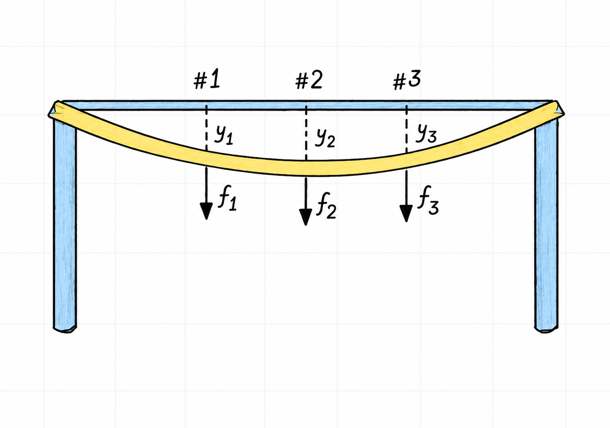

Inverses
An inverse matrix reverses the transformation performed by a matrix. This is the matrix analogue of multiplying a nonzero scalar by its reciprocal. For example, the inverse of \(3\) is \(\frac{1}{3}\), since multiplying in either order returns \(1\).
An \(n\times n\) matrix \(A\) is invertible if there is an \(n\times n\) matrix \(C\) such that
\[ CA=I_n \qquad\text{and}\qquad AC=I_n \]
Here, \(I_n\) is the \(n\times n\) identity matrix. If such a matrix \(C\) exists, it is unique and is denoted by \(A^{-1}\). Therefore
\[ A^{-1}A=I_n \qquad\text{and}\qquad AA^{-1}=I_n \]
To see why the inverse is unique, suppose that \(B\) and \(C\) are both inverses of \(A\). Then
\[ \begin{aligned} B &= BI_n \\ &= B(AC) \\ &= (BA)C \\ &= I_nC \\ &= C. \end{aligned} \]
There is no general operation of matrix division. Matrix multiplication is not commutative, so the order in which an inverse is applied matters. A two-sided inverse also requires \(A\) to be square.
A matrix that is not invertible is called singular. An invertible matrix is also called nonsingular
1 Verifying an inverse
Consider the matrices
\[ A= \begin{bmatrix} 2 & 5 \\ -3 & -7 \end{bmatrix} \qquad C= \begin{bmatrix} -7 & -5 \\ 3 & 2 \end{bmatrix} \]
To verify that \(C\) is the inverse of \(A\), both multiplication orders must give the identity matrix
\[ \begin{aligned} AC &= \begin{bmatrix} 2 & 5 \\ -3 & -7 \end{bmatrix} \begin{bmatrix} -7 & -5 \\ 3 & 2 \end{bmatrix} \\[0.5em] &= \begin{bmatrix} -14+15 & -10+10 \\ 21-21 & 15-14 \end{bmatrix} = \begin{bmatrix} 1 & 0 \\ 0 & 1 \end{bmatrix} =I_2 \end{aligned} \]
Similarly
\[ \begin{aligned} CA &= \begin{bmatrix} -7 & -5 \\ 3 & 2 \end{bmatrix} \begin{bmatrix} 2 & 5 \\ -3 & -7 \end{bmatrix} \\[0.5em] &= \begin{bmatrix} -14+15 & -35+35 \\ 6-6 & 15-14 \end{bmatrix} = \begin{bmatrix} 1 & 0 \\ 0 & 1 \end{bmatrix} =I_2 \end{aligned} \]
Since \(AC=CA=I_2\), it follows that
\[ C=A^{-1} \]
2 Inverse of a two-by-two matrix
Textbook reference: p.135
For a matrix
\[ A= \begin{bmatrix} a & b \\ c & d \end{bmatrix} \]
the determinant is
\[ \det(A)=ad-bc \]
If \(ad-bc\neq 0\), then \(A\) is invertible and
\[ A^{-1} = \frac{1}{ad-bc} \begin{bmatrix} d & -b \\ -c & a \end{bmatrix} \]
If \(ad-bc=0\), division by the determinant is impossible and \(A\) is singular.
The determinant therefore acts as a quick test for invertibility in the two-by-two case. A zero determinant means that the transformation collapses the plane into a lower-dimensional set, so no transformation can undo it.
3 Solving a linear system with an inverse
Textbook reference: p.136
If \(A\) is an invertible \(n\times n\) matrix, then for every \(\vec{b}\in\mathbb{R}^n\), the equation
\[ A\vec{x}=\vec{b} \]
has the unique solution
\[ \vec{x}=A^{-1}\vec{b}. \]
Multiplying both sides on the left by \(A^{-1}\) gives
\[ \begin{aligned} A^{-1}A\vec{x} &= A^{-1}\vec{b} \\ I_n\vec{x} &= A^{-1}\vec{b} \\ \vec{x} &= A^{-1}\vec{b} \end{aligned} \]
Consider the system
\[ \begin{aligned} 3x_1+4x_2 &= 3 \\ 5x_1+6x_2 &= 7 \end{aligned} \]
Its matrix form is
\[ A\vec{x}=\vec{b} \qquad\text{with}\qquad A= \begin{bmatrix} 3 & 4 \\ 5 & 6 \end{bmatrix} \qquad \vec{b}= \begin{bmatrix} 3 \\ 7 \end{bmatrix} \]
Using the two-by-two inverse formula
\[ \begin{aligned} A^{-1} &= \frac{1}{3\cdot 6-4\cdot 5} \begin{bmatrix} 6 & -4 \\ -5 & 3 \end{bmatrix} \\[0.5em] &= \begin{bmatrix} -3 & 2 \\ \frac{5}{2} & -\frac{3}{2} \end{bmatrix} \end{aligned} \]
The solution is therefore
\[ \begin{aligned} \vec{x} &=A^{-1}\vec{b} \\ &= \begin{bmatrix} -3 & 2 \\ \frac{5}{2} & -\frac{3}{2} \end{bmatrix} \begin{bmatrix} 3 \\ 7 \end{bmatrix} \\[0.5em] &= \begin{bmatrix} -9+14 \\ \frac{15}{2}-\frac{21}{2} \end{bmatrix} = \begin{bmatrix} 5 \\ -3 \end{bmatrix} \end{aligned} \]
4 Engineering interpretation: flexibility and stiffness
Inverse matrices appear naturally in structural models. Consider a horizontal elastic beam supported at both ends, with forces applied at three points. Figure 1 shows the force and deflection coordinates used in this model. Let

\[ \vec{f}= \begin{bmatrix} f_1 \\ f_2 \\ f_3 \end{bmatrix} \qquad\text{and}\qquad \vec{y}= \begin{bmatrix} y_1 \\ y_2 \\ y_3 \end{bmatrix} \]
list the applied forces and the corresponding vertical deflections. In a linear elastic model, a flexibility matrix \(D\) relates them by
\[ \vec{y}=D\vec{f}. \]
Each column of \(D\) describes the deflections caused by a unit force at one point while the other applied forces are zero. If \(D\) is invertible, its inverse is the stiffness matrix
\[ \vec{f}=D^{-1}\vec{y}. \]
The columns of \(D^{-1}\) have the complementary interpretation: the \(i\)th column gives the forces required to produce a unit deflection at point \(i\) and zero deflection at the other measured points. The units also reflect the physical meaning: flexibility may be measured in deflection per unit force, whereas stiffness is measured in force per unit deflection.
This is a useful engineering view of an inverse. The same model can answer two different questions: “what deflection results from these loads?” and “what loads are needed to obtain this deflection?”
5 Finding an inverse by row reduction
For larger matrices, an inverse can be found by augmenting \(A\) with the identity matrix
\[ \left[A\mid I_n\right] \]
Apply row operations until the left side becomes the identity. If this is not possible, \(A\) is singular and has no inverse. If it is possible, the right side becomes the inverse
\[ \left[A\mid I_n\right] \longrightarrow \left[I_n\mid A^{-1}\right] \]
This works because row operations amount to multiplying by invertible elementary matrices. If their combined effect changes \(A\) into \(I_n\), that same combination is \(A^{-1}\)
Consider
\[ A= \begin{bmatrix} 1 & 2 & 0 \\ 0 & 1 & 1 \\ 1 & 2 & 1 \end{bmatrix} \]
Begin with the augmented matrix
\[ \left[ \begin{array}{ccc|ccc} 1 & 2 & 0 & 1 & 0 & 0 \\ 0 & 1 & 1 & 0 & 1 & 0 \\ 1 & 2 & 1 & 0 & 0 & 1 \end{array} \right] \]
Eliminate the leading entry in the third row with \(R_3\leftarrow R_3-R_1\)
\[ \left[ \begin{array}{ccc|ccc} 1 & 2 & 0 & 1 & 0 & 0 \\ 0 & 1 & 1 & 0 & 1 & 0 \\ 0 & 0 & 1 & -1 & 0 & 1 \end{array} \right] \]
Next use \(R_2\leftarrow R_2-R_3\)
\[ \left[ \begin{array}{ccc|ccc} 1 & 2 & 0 & 1 & 0 & 0 \\ 0 & 1 & 0 & 1 & 1 & -1 \\ 0 & 0 & 1 & -1 & 0 & 1 \end{array} \right] \]
Finally use \(R_1\leftarrow R_1-2R_2\)
\[ \left[ \begin{array}{ccc|ccc} 1 & 0 & 0 & -1 & -2 & 2 \\ 0 & 1 & 0 & 1 & 1 & -1 \\ 0 & 0 & 1 & -1 & 0 & 1 \end{array} \right] = \left[I_3\mid A^{-1}\right] \]
Therefore
\[ A^{-1} = \begin{bmatrix} -1 & -2 & 2 \\ 1 & 1 & -1 \\ -1 & 0 & 1 \end{bmatrix} \]
As a check
\[ \begin{aligned} A^{-1}A &= \begin{bmatrix} -1 & -2 & 2 \\ 1 & 1 & -1 \\ -1 & 0 & 1 \end{bmatrix} \begin{bmatrix} 1 & 2 & 0 \\ 0 & 1 & 1 \\ 1 & 2 & 1 \end{bmatrix} \\[0.5em] &= \begin{bmatrix} 1 & 0 & 0 \\ 0 & 1 & 0 \\ 0 & 0 & 1 \end{bmatrix} =I_3 \end{aligned} \]
6 Properties of inverse matrices
The inverse operation undoes a transformation. Applying it twice must therefore recover the original transformation. In addition, a product of invertible matrices is invertible, but the order of its inverse is reversed.
Textbook reference: p.137
For invertible \(n\times n\) matrices \(A\) and \(B\),
\[ \begin{aligned} \left(A^{-1}\right)^{-1} &= A, \\ (AB)^{-1} &= B^{-1}A^{-1}, \\ \left(A^T\right)^{-1} &= \left(A^{-1}\right)^T. \end{aligned} \]
The first identity follows directly from the definition: \(A\) is a two-sided inverse of \(A^{-1}\) because
\[ A^{-1}A=I_n \qquad\text{and}\qquad AA^{-1}=I_n. \]
For the product identity, verify that \(B^{-1}A^{-1}\) is a two-sided inverse of \(AB\):
\[ \begin{aligned} (AB)\left(B^{-1}A^{-1}\right) &= A\left(BB^{-1}\right)A^{-1} \\ &= AI_nA^{-1} \\ &= I_n \end{aligned} \qquad\text{and}\qquad \begin{aligned} \left(B^{-1}A^{-1}\right)(AB) &= B^{-1}\left(A^{-1}A\right)B \\ &= B^{-1}I_nB \\ &= I_n. \end{aligned} \]
The reversed order is essential: \(A^{-1}B^{-1}\) does not generally undo the transformation \(AB\). Finally, transposing the two identities for \(A^{-1}\) gives
\[ \begin{aligned} A^T\left(A^{-1}\right)^T &= \left(A^{-1}A\right)^T \\ &= I_n, \end{aligned} \]
and similarly \(\left(A^{-1}\right)^TA^T=I_n\). Thus \(\left(A^{-1}\right)^T\) is the inverse of \(A^T\).
7 Elementary matrices
An elementary matrix is obtained by applying one elementary row operation to an identity matrix. Multiplying a matrix on the left by an elementary matrix performs that same row operation on the matrix.
For example, let
\[ A= \begin{bmatrix} a & b & c \\ d & e & f \\ g & h & i \end{bmatrix} \]
and define
\[ E_1= \begin{bmatrix} 1 & 0 & 0 \\ 0 & 1 & 0 \\ -4 & 0 & 1 \end{bmatrix} \qquad E_2= \begin{bmatrix} 0 & 1 & 0 \\ 1 & 0 & 0 \\ 0 & 0 & 1 \end{bmatrix} \qquad E_3= \begin{bmatrix} 1 & 0 & 0 \\ 0 & 1 & 0 \\ 0 & 0 & 5 \end{bmatrix}. \]
Their products with \(A\) make the three types of elementary row operation visible:
\[ \begin{aligned} E_1A &= \begin{bmatrix} a & b & c \\ d & e & f \\ g-4a & h-4b & i-4c \end{bmatrix} &&\text{corresponding to } R_3\leftarrow R_3-4R_1, \\ E_2A &= \begin{bmatrix} d & e & f \\ a & b & c \\ g & h & i \end{bmatrix} &&\text{corresponding to } R_1\leftrightarrow R_2, \\ E_3A &= \begin{bmatrix} a & b & c \\ d & e & f \\ 5g & 5h & 5i \end{bmatrix} &&\text{corresponding to } R_3\leftarrow 5R_3. \end{aligned} \]
Several row operations can be combined by multiplying their elementary matrices. For instance, \(E_2E_1A\) first performs \(R_3\leftarrow R_3-4R_1\) and then swaps rows one and two. This is the basis for the row-reduction method above: if elementary matrices reduce \(A\) to the identity, their product is \(A^{-1}\). See Elimination Matrices for a complete inverse calculation using this approach.
8 Invertibility and row equivalence
Elementary matrices are themselves invertible. To invert an elementary matrix, reverse the row operation used to create it. For the matrix \(E_1\) above, the operation is \(R_3\leftarrow R_3-4R_1\). Its reverse is \(R_3\leftarrow R_3+4R_1\), so
\[ E_1^{-1}= \begin{bmatrix} 1 & 0 & 0 \\ 0 & 1 & 0 \\ 4 & 0 & 1 \end{bmatrix}. \]
Indeed, applying the reverse operation to \(E_1\) returns the identity matrix. Equivalently, \(E_1^{-1}E_1=E_1E_1^{-1}=I_3\).
Textbook reference: p.140
An \(n\times n\) matrix \(A\) is invertible if and only if it is row equivalent to \(I_n\). Moreover, any sequence of elementary row operations that reduces \(A\) to \(I_n\) transforms \(I_n\) into \(A^{-1}\).
To see why, suppose the row operations correspond to elementary matrices \(E_1,E_2,\ldots,E_k\). If they reduce \(A\) to the identity, then
\[ E_k\cdots E_2E_1A=I_n. \]
Therefore the product of elementary matrices is \(A^{-1}\). Applying the same operations to the identity gives
\[ E_k\cdots E_2E_1I_n=A^{-1}. \]
This result gives a practical test and algorithm for finding an inverse:
- Form the augmented matrix \(\left[A\mid I_n\right]\).
- Row reduce its left side.
- If the result is \(\left[I_n\mid A^{-1}\right]\), then \(A\) is invertible. Otherwise, \(A\) is singular and has no inverse.
9 Worked example: finding a three-by-three inverse
Find the inverse of
\[ A= \begin{bmatrix} 0 & 1 & 2 \\ 1 & 0 & 3 \\ 4 & -3 & 8 \end{bmatrix}. \]
Augment \(A\) with \(I_3\) and apply row operations to both sides:
\[ \left[ \begin{array}{ccc|ccc} 0 & 1 & 2 & 1 & 0 & 0 \\ 1 & 0 & 3 & 0 & 1 & 0 \\ 4 & -3 & 8 & 0 & 0 & 1 \end{array} \right]. \]
First swap the first two rows, eliminate below the first pivot, and then eliminate below the second pivot:
\[ \begin{aligned} R_1&\leftrightarrow R_2, \\ R_3&\leftarrow R_3-4R_1, \\ R_3&\leftarrow R_3+3R_2, \end{aligned} \qquad \left[ \begin{array}{ccc|ccc} 1 & 0 & 3 & 0 & 1 & 0 \\ 0 & 1 & 2 & 1 & 0 & 0 \\ 0 & 0 & 2 & 3 & -4 & 1 \end{array} \right]. \]
Scale the third pivot and clear the entries above it:
\[ \begin{aligned} R_3&\leftarrow \frac{1}{2}R_3, \\ R_1&\leftarrow R_1-3R_3, \\ R_2&\leftarrow R_2-2R_3. \end{aligned} \]
This gives
\[ \left[ \begin{array}{ccc|ccc} 1 & 0 & 0 & -\frac{9}{2} & 7 & -\frac{3}{2} \\ 0 & 1 & 0 & -2 & 4 & -1 \\ 0 & 0 & 1 & \frac{3}{2} & -2 & \frac{1}{2} \end{array} \right] = \left[I_3\mid A^{-1}\right]. \]
Therefore
\[ A^{-1}= \begin{bmatrix} -\frac{9}{2} & 7 & -\frac{3}{2} \\ -2 & 4 & -1 \\ \frac{3}{2} & -2 & \frac{1}{2} \end{bmatrix}. \]
Because the left side reduces to \(I_3\), \(A\) is invertible. As a check,
\[ A A^{-1}=I_3. \]